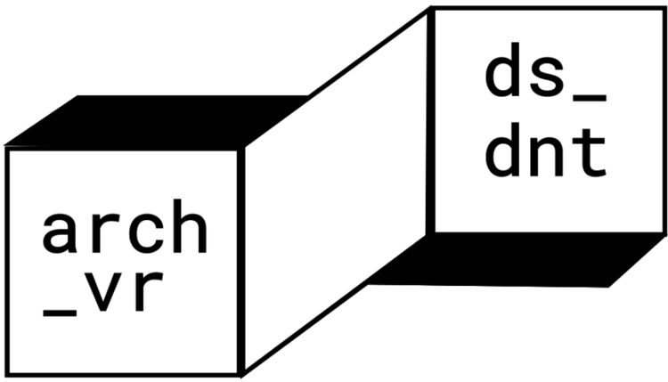

Los viajes nos desplazan, nos mueven de un lugar a otro, nos movilizan.
Nos muestran otros paisajes y vivencias.
Nos cambian_
Te invitamos a este viaje, en el cual no estas solx.
“Creo que es importante que la gente que pueda contar su historia la cuente, porque hay muchas personas que
buscan historias parecidas que intentan ubicarse en algún lugar del mundo.”
VALENTI, PURRANQUE, X REGIÓN.
“Mi mama tenía unas muñecas y yo se las sacaba po. Pero siempre los chiquillos jugaban a la pelota y a mi no
me gustaba, yo era seca pa la cuerda.”
KATHERINE, QUILLOTA, V REGIÓN.
“El miedo queda contigo, una aprende a abrazarse, a darse calma decirte ya, sea lo que sea que te haya dado
miedo en un momento de la vida que no te achique, que no te haga sentir menos que el miedo no sea más grande
que tu.”
TURQUESA LILA MENTOLADA, ILLAPEL, IV REGIÓN.

INSTRUCCIONES
“Archivero Disidente es un documental interactivo que posee dos formas para navegar por los contenidos. Puedes comenzar por lxs participantes o por las categorías. Recuerda que con las flechas puedes desplazarte hacia adelante o atrás. Y tranquilx, siempre puedes guiarte por el menú que se encontrará en la parte inferior de la pantalla, ahí también encontrarás distintas configuraciones para hacer de este viaje, un experiencia significativa”.